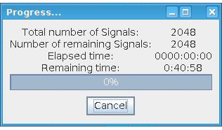

For the channels installed in the tester and being licensed according to the device
license definition and for the pins and sites defined in a pin configuration of a device, it is
possible to measure the fixture delays and save them as channel attributes for this
device.
About this task
The test system determines the fixture delay values to balance timing differences caused by
the various wire lengths present on the DUT board. Fixture delay measurement is possible for
"capable" channels only, for example, digital channels connected to PS1600 or PS5000 cards. Cards such as the DPS128 card cannot be used for
fixture delay measurements. Similarly, utility lines cannot be measured.
- Two-step measurement
-
Fixture delay measurement is a two-step measurement:
- Initial measurement is made with the DUT board, measuring the delays to the pins of the
device socket for the selected test application.
- The DUT board is then undocked and a second measurement made, measuring the delay to the
end of the pogo cable.
Note The sequence to start the fixture delay measurement with the DUT board
docked, then undocked is the reverse order of the SmarTest versions 7.6 and earlier.
- Site and channel selection
- You might want to select only a specific site or channel. Ignored sites cannot be measured.
To deselect a site, identify all digital channels that belong to that unwanted site by
referring to the pin configuration, then individually deselect them in the Fixture Delay
tool.
- Parallel or sequential measurements
-
By default, fixture delay measurements run on multiple channels in parallel.
Some custom DUT boards require sequential measurement due to DUT board design and
electrical characteristics of the channel path. If you are using such a DUT board with more
than one channel, fixture delay measurement must be done in two steps: parallel followed by
sequential. The basic procedure is:
- Exclude channels that require sequential measurement from the parallel measurement by
deselecting them and run the parallel measurement.
- Exclude all channels measured in parallel and include those channels requiring sequential
measurement and repeat the measurement.
Note It is possible to run two or more channels in parallel if these channels do
not interfere with each other.
If you need to the change routing per site, the number of
fixture delay measurement steps will be multiplied by the number of sites.
- Errors
- Channels selected for which fixture delay cannot be measured are listed in the Eclipse
Error Log view.
Before you begin
- Make sure that the DUT board is docked and the DUT socket is empty.
- Make sure that you work online to measure the fixture delays.
- Make sure that you only measure channels that have been defined, and do not terminate in an
ignored site.
- Make sure that a device license file is available for the device to be
tested. Base licenses for the channels to be measured are required to run the test program and
must be available before running a fixture delay measurement. Sufficient licenses must be
available for executing the measurement patterns. If there are insufficient licenses, an
associated error message is displayed. If a license-related message is displayed during
execution of the Fixture Delay tool, stop the measurement, have the license situation resolved,
and start the Fixture Delay tool again.
Procedure
-
If you want to run the fixture delay with any relays or other hardware energized by the
utility lines, you must carefully select the utility line configuration before performing the
fixture delay calibration. Refer to Using the Utility Line View and Utility line control software for the
utility lines for more information on setting them up.
- If you have already started the Fixture Delay tool, press Cancel to
exit the Measuring Fixture Delay wizard.
- Make sure that the DUT board is docked and the DUT socket is empty.
- Set up the required utility lines or utility power.
CAUTION Do not undock the board if utility-power pins are used.
- Utility power
Undocking the DUT board removes utility power. Re-docking does not restore utility
power.
EXA-Scale systems: Utility power pins are the default option with every
system.
Smart-Scale Systems: Utility power pins are only available with external
power supplies.
- Utility lines
- Undocking and re-docking the DUT board maintains the state of the utilities - they
are not reset.
- Go to the next step to start the Fixture Delay tool.
-
Start the Fixture Delay tool:
CAUTION Fixture delay measurements are sensitive and can be
affected by executing other actions in SmarTest. During the fixture delay measurement, close
all other SmarTest windows, including Pin Configuration, Level Setup, Timing Setup windows,
and do not run any other SmarTest tools.
After the fixture delay measurement is completed,
close the Fixture Delay Tool window.
Note During fixture delay measurement execution, there is a
temporary re-definition of the pin configuration as follows:
- For each pogo, an intermediate pin is defined.
- Each intermediate pin is measured.
- Measured data is mapped back to the original pin and stored with the pogo reference in
the channel attributes file.
Do not change the pin configuration during the fixture delay measurement
procedure.
- Optional:
If you want to run a sequential measurement, Fixture Delay Tool window menu bar,
choose Execute and check Sequential
Measurement.
-
From the Fixture Delay Tool window toolbar, click the
Execute button. Follow the instructions to start the measuring
process.
CAUTION Do not change any settings in the system while the
fixture delay measurement is running. Close all other setup windows to avoid the possibility
of accidental setup changes during the fixture delay measurement.
- A warning is displayed reminding you to set the utility line (see step 1).
If the utility line is set, click OK to continue, otherwise
restart the procedure and set the utility line first.
- If any of the channels are outside of the current view, the number of such channels is
displayed:
If you want to change the channel selection before you start the fixture delay
measurement, click Cancel. This terminates this procedure; you need
to start again with step 1 after making the desired
changes.
Click OK to continue.
- Timing, level settings, and pattern are reset to values required for the fixture delay
measurements and are not reset to the values specified for the current device after the
measurement is complete. If these settings have not been saved, click
Cancel and save the timing and level settings before you start the
fixture delay measurement.
Note You must manually reload setups after completion of the fixture delay
measurement.
Click OK to continue.
-
A warning window appears that instructs you to check that the DUT board is docked without a
DUT before making measurements:
Click OK to continue.
The initial measurement is made with the DUT board connected, measuring the delays to the
pins of the device socket for the selected test application. A message window showing test
progress is displayed and the Report window displays the running results.
Note If you are running a sequential measurement, the
Progress dialog displays some extra details:
For
example:

-
Click OK.
After the initial measurement is complete, a message window appears that prompts you to undock
the DUT board:
Undock the DUT board and click OK to continue.
The second measurement is started, measuring the delay to the end of the pogo cable. A
message window showing test progress is displayed:
-
When the measurement is complete, save the file of measured fixture delay data. (See Using the File menu for details.)
By default the saved file is stored in the following directory:
/var/opt/hp93000/soc/ch_attributes. However, you can choose any
alternative directory. For example, if you use multiple DUT boards, you may find it useful to
save or move the file into a directory that will help you to re-associate it with the
particular DUT board.
After the fixture delay has been measured, the timing will be updated with the next
timing-change sequence, that is, when setting or enabling a new timing.
-
Close the Fixture Delay tool.
Results
After the measurement is complete the screen shown below appears. The Fixture Delay column
contains the channel delay values.
The following screenshot illustrates how errors are reported. Such error might arise from the
fixture delay measurement algorithm not being able to determine the reflection type of the
time-domain reflectometry (TDR). Licensing errors are also displayed in the Error Log
window.
What to do next
Manually reload setups after completion of the fixture delay measurement.